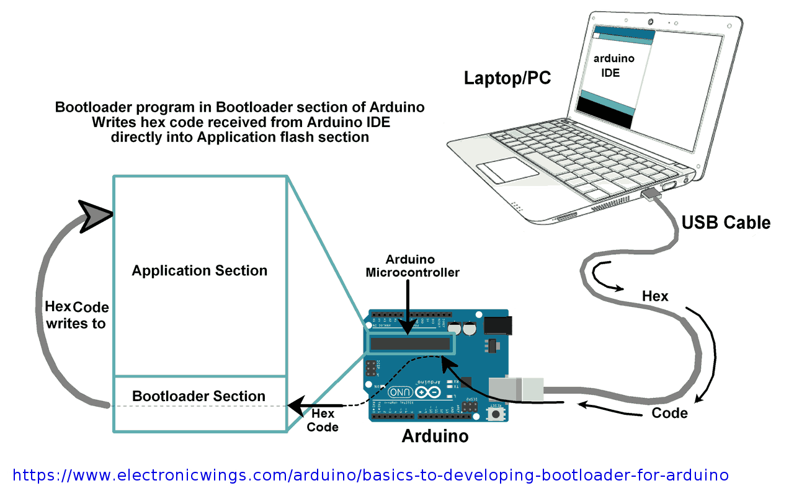
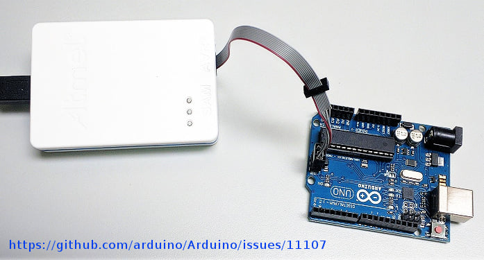
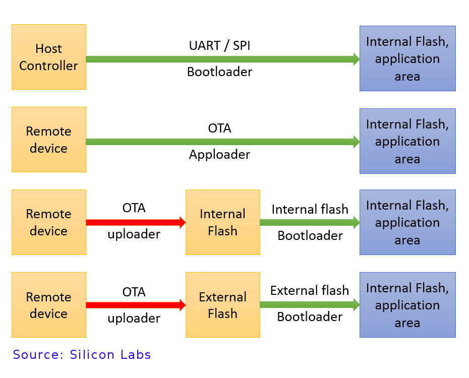

Bootloader สำหรับไมโครคอนโทรลเลอร์#
▷ MCU Bootloader#
Bootloader เป็นโปรแกรมที่มีขนาดเล็กที่ถูกใส่ไว้ในหน่วยความจำภายในชิปไมโครคอนโทรลเลอร์ เช่น เก็บไว้ในหน่วยความจำแบบ ROM (อ่านได้เท่านั้นและเขียนทับหรือแก้ไขไม่ได้) จากผู้ผลิตหรือโรงงาน (แบบนี้เรียกว่า built-in ROM Bootloader) หรืออีกกรณีหนึ่งคือ เก็บไว้ในหน่วยความจำประเภท Flash (เรียกส่วนนี้ว่า Boot Section) ผู้ใช้สามารถเขียนทับใหม่ได้ หรืออาจมีการเซตบิตเพื่อป้องกันการเขียนทับได้
นักพัฒนาได้สร้าง Bootloader ด้วยการเขียนโค้ดคำสั่งภาษา Assembly หรือภาษา C ก็ได้ จากนั้นก็แปลงให้เป็นไฟล์ไบนารี (เช่น .hex หรือ .bin) สำหรับไมโครคอนโทรลเลอร์เป้าหมาย (Target Device) แล้วนำไปเขียนใส่ลงในหน่วยความจำภายในชิป
ในขั้นตอนการเขียนไฟล์ Bootloader Firmware ใส่ลงในชิป ผู้ใช้จะต้องอาศัยอุปกรณ์ฮาร์ดแวร์ที่เรียกว่า Device Programmer เช่น เชื่อมต่อกับพอร์ต USB ของคอมพิวเตอร์ในด้านหนึ่ง และอีกด้านหนึ่งเป็นคอนเนกเตอร์สำหรับเชื่อมต่อกับขาของโครคอนโทรลเลอร์ ยกตัวอย่างกรณีของบอร์ด Arduino Uno ก็มีคอนเนกเตอร์ที่เรียกว่า ISP (In-System Programming) หรือ ICSP (In-Circuit Serial Programming) มีการจัดเรียงขาแบบ 2x3 (Male Pin Headers, 2.54mm pitch)

รูป: หลักการทำงานของ Arduino Bootloader

รูป: อุปกรณ์ Atmel ICE Programmer และบอร์ด Arduino Uno
ไมไครคอนโทรลเลอร์ต่างตระกูลต่างบริษัทกัน ก็อาจใช้อุปกรณ์ที่ไม่เหมือนกัน เช่น ถ้าเป็นตระกูล ARM Cortex-M Series ก็จะใช้รูปแบบที่เรียกว่า SWD (Serial-Wire Debug) เป็นต้น แต่ถ้าเป็นชิป Atmel AVR หรือ Microchip PIC ก็จะใช้อุปกรณ์และรูปแบบการทำงานที่แตกต่างออกไป
ประโยชน์ของ Bootloader ก็คือ การทำให้ผู้ใช้สามารถนำโปรแกรม User Application Code ไปใส่ลงในหน่วยความจำ Flash ภายในชิป โดยไม่จำเป็นต้องใช้อุปกรณ์เสริมภายนอก (External Device Programmer) ที่อาจมีราคาแพง
ฟังก์ชันการทำงานของ Bootloader โดยทั่วไป มีดังนี้
- เมื่อมีการรีเซตหรือบูทระบบ ไมโครคอนโทรลเลอร์จะโหลดและทำคำสั่งแรกที่อยู่ใน Bootloader และมีการทำคำสั่งต่าง ๆ เพื่อเขียนค่าลงในรีจิสเตอร์ที่เกี่ยวข้อง เพื่อทำให้ไมโครโทรลเลอร์พร้อมที่จะทำงานในลำดับถัดไป เช่น ตั้งค่าวงจรความถี่สัญญาณ Clock เป็นต้น
- เมื่อทำขั้นตอน System Initialization แล้วจากนั้นจึงส่งต่อการทำงานให้โปรแกรมที่เรียกว่า
User Application Code ซึ่งเก็บอยู่ในหน่วยความ Flash (ในส่วนที่ไม่ใช่ Boot Section)
หรืออาจจะมองว่าเป็นการส่งต่อการทำงานให้ฟังก์ชัน
main()ของโปรแกรมที่เขียนด้วยภาษา C/C ยกเว้นแต่ว่า ต้องการจะเข้าสู่โหมดสำหรับการอัปโหลดใหม่ ก็จะรอการติดต่อกับซอฟต์แวร์ที่ทำงานบนคอมพิวเตอร์ หรือรอจนกว่า Timeout
ในบางกรณีก็อาจมีการเก็บข้อมูลสำหรับโปรแกรม User Application Code ไว้ภายนอก เช่น ใช้ชิป External Serial Flash แทนการเก็บไว้ใน On-Chip Flash แล้วโหลดโปรแกรมมาใส่ไว้ใน SRAM ที่อยู่ภายในชิป
ในบางกรณีไมโครคอนโทรลเลอร์จะไม่เข้าสู่โหมด Bootloader โดยอัตโนมัติ เมื่อรีเซตระบบ แต่จะเกิดขึ้นเมื่อมีการกำหนดเงื่อนไขโดยผู้ใช้ เช่น การตรวจสอบสถานะลอจิกของขา GPIO บางขาสำหรับ Boot Pin (เช่น ขา BOOT0 สำหรับ STM32) หรือใช้วิธีการอื่น
การเชื่อมต่อกับคอมพิวเตอร์มีหลายรูปแบบ
- การสื่อสารกับคอมพิวเตอร์ (เรียกว่า Host) มีหลายช่องทางให้เลือก โดยทั่วไป ก็ผ่านทาง Serial หรือ USB เป็นต้น ถ้าไมโครคอนโทรลเลอร์สามารถรองรับการเชื่อมต่อแบบเครือข่าย (ใช้สายหรือไร้สาย) ก็จะใช้วิธีเชื่อมต่อผ่าน Ethernet หรือ WiFi เป็นต้น การโปรแกรมหรืออัปเดตแบบไร้สาย ก็เรียกว่า Over-the-Air (OTA) Update
- ถ้า Bootloader เชื่อมต่อได้ผ่านทาง Serial ก็เรียกว่า "Serial Bootloader" ถ้าเชื่อมต่อผ่านทาง USB ก็เรียกว่า "USB Bootloader" เช่น ใช้โพรโตคอลสื่อสารที่เรียกว่า USB DFU (Device Firmware Update) Protocol เป็นต้น
- ถ้าเป็นการอัปเดตผ่าน Ethernet ก็อาจใช้วิธีเชื่อมต่อกับ TFTP Server และเรียกว่า "TFTP Bootloader"
- ชิป STM32 หลาย ๆ รุ่น ของบริษัท STMicroelectronics ได้มีการใส่ "DFU ROM Bootloader"
มาให้แล้ว และรองรับการทำงานในโหมดที่เรียกว่า Device Firmware Upgrade (DFU) Mode และซอฟต์แวร์สำหรับทำขั้นตอนการโปรแกรมก็คือ STM32CubeProgrammer
แต่ถ้าเป็น Open Source ก็ใช้โปรแกรม
dfu-utilแบบ Command Line - ชิปไมโครคอนโทรลเลอร์ ARM Cortex-M Series ที่รองรับการใช้งาน Native USB ในหลาย ๆ รุ่น
ก็สามารถใช้งานกับ Microsoft UF2 Bootloader ได้ เมื่อเชื่อมต่อกับคอมพิวเตอร์ทางพอร์ต USB
โดยจะมองเห็นเป็น USB Mass Storage Device และถ้าเรามีไฟล์เฟิร์มแวร์ที่แปลงให้เป็นไฟล์
.uf2ก็สามารถลากไปวางเพื่อโปรแกรมอุปกรณ์ได้สะดวก - Bootloader ในยุคปัจจุบัน เช่น สำหรับ IoT และ Field OTA อาจมีการเพิ่มมาตรการป้องกันสำหรับความปลอดภัย จึงเรียกว่า Secure Bootloader ทำให้การอัปเดทเฟิร์มแวร์มีความปลอดภัยมากขึ้น (Secure Firmware Update) เช่น มีการเข้ารหัสป้องกัน (Encryption) ด้วยอัลกอริทึม AES และมีการตรวจสอบยืนอุปกรณ์ด้วย Digital Signature เช่น ใช้วิธี ECDSA (Elliptic Curve Digital Signature Algorithm) เป็นต้น

รูป: ตัวเลือกและรูปแบบการเชื่อมต่อสำหรับการทำงานของ Bootloader
This work is licensed under a Creative Commons Attribution-ShareAlike 4.0 International License.
Created: 2022-12-10 | Last Updated: 2022-12-10